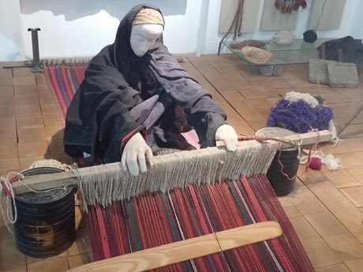

Home / Living Traditions / Mesopotamia, Levant and Arabia
Playable heritage gameSadu Bedouin ground-loom weaving
Also known as السدو
Bedouin weavers of Jordan stretch the warp flat along the ground, pegged at both ends, and weave sturdy goat-hair and wool strips for tents and saddlebags. Bands of diamonds, triangles and zigzags are built up row by row and always read the same from the left edge to the right.


How to play
- Study the strip on the chart: each row is a band of wool in one colour and shape.
- Choose a wool colour, then a pattern shape, and place it on the loom; its mirror partner on the other side appears at once.
- Fill every band of the chart, then check your strip against it.
Rules at a glance
- Every strip is a mirror of itself: a shape placed on one side is also placed on the other.
- Each cell takes one shape in one wool colour; placing the same again lifts it.
- Your strip is judged cell by cell against the chart: shape and colour must both match.
- Three charts are woven in turn: a tent strip, a saddlebag band and a wedding strip.
About the tradition
Sadu is a living craft of Bedouin women across Jordan and the Arabian Peninsula, where weaving on a ground loom has been handed from mother to daughter and is still practised in cooperatives today.
Origins
A living tradition passed from person to person; it is not tied to a single dated origin. It belongs to the cultural world of Mesopotamia, Levant and Arabia.
Credits
- Photo: Danny-w, CC BY-SA 3.0, source on Wikimedia Commons
- Text: CC BY-SA 4.0, World Heritage Games.
Sources

Get the app
Sadu Bedouin ground-loom weaving is one of 9 weaving and lace crafts in the Weaving & Lace of the World app for Android. Submitted to Google Play; in review. Store links appear here the day it goes live. One app, many traditions, no account needed.
More games to play

Persian Carpet Knotting
Iran +1 · Crafts and makingPlay preview · in the Textile Crafts of the World app
Tatreez Palestinian Cross-Stitch
Palestine +1 · Crafts and makingPlay preview · in the Textile Crafts of the World app


Celtic knot weave
Ireland +1 · Crafts and makingPlay preview · in the Textile Crafts of the World app
Sashiko Stitch Patterns
Japan · Crafts and makingPlay preview · in the Textile Crafts of the World app
More from Jordan

Bedouin Coffee Pour
Jordan · Crafts and making

Jordanian Sand Bottle Art
Jordan · Crafts and making

Mijwiz Double Clarinet
Lebanon +3 · Musical instrumentsPlay preview · in the Music & Dance of the World app